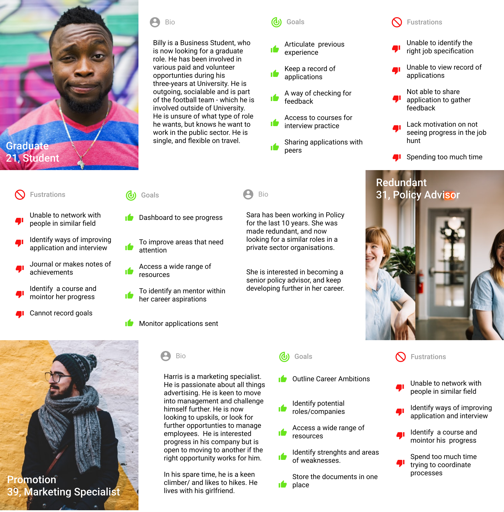

Problem
The user is unable to collate their job applications that would help structure their energy on increasing their chances of getting employment.
Solution
Within the application tab, the user should be able to experience a linear cycle of applying, but with a record of information all in one place to refer to.
WHAT IS allO?
allO Jobs is a career management tool, aimed at helping secure a role; whether that’s a graduate role, changing direction or simple moving up the career ladder.
DESIGN PROCESS
In this process, I will add the storyboard and paper prototype to the design phase to help brainstorm and understand the painpoint within the selected design.
INTERVIEWS
The interviews were conducted at random and there were no requirements to fill out this application, just that you were over 18 years old. I interviewed 10 people, aged between 18 - 40. I asked the following questions:
- Are you currently employed?
- If Yes, what are you next steps in your career journey?
- How do you think you would go about achieving this?
- What frustration would you/or have you encountered whilst doing this>
- If you answered no,what are the current challenges you are facing on your job search?
- What has been an important element of the job search? i.e feedback
- How are you currently organise/managing your search?
The aim of these interviews was to build empathy of the user and how they would use the application. Below are a few comments that I have categorized in a themes, this will help inform the user persona.
USER PERSONA
Based on the information gathered, I have collated three user persona’s that illustrate the key demographic of users that would be interested in using allO jobs. The nature of these will outline the needs, goal and motivation, but what is critical here is the user behaviour so I can better empathise with how the product flow meets each need, but as a whole solution not just one. Adding in the biography gives a rationale to the user behaviour, and would help priorities which frustration is seen as a high priority compare to the others. This would help contribute to helping find a layout solution that works for all.

PROBLEM STATEMENT
INFORMATION NEED TO BE ADDEDs
STORYBOARD
To prioritize effectively I want explore the behaviours of each persona. I have chosen to visualise this process via a storyboard. Through this, we can better understand how the user is going use the web application and can highlight how each persona is influenced by their goals. I can then consider a number ways the application could be interacted within. The aim here is to identify a common thread of a potential solutions that could work for all the personas. Overall, the process allows good level of ideation to work through a layout that would for the prioritised needs.

In the sequence above there is...
PAPER PROTOTYPE
Now having gained a better understanding of the persona’s behaviours, and identified common thread between the three personas’ I was to test this using paper prototype. I wanted to continue brainstorming a few different possible solutions that would put to test the commonality between the three user personas. By using the paper prototype, it will prioritize the solution that could work for all – or that is seen as the most important aspect to their experience. I went back to those who I interviews earlier to gather feedback at this stage. After reflecting on my first UX project, one of the main things I wanted to ensure was that I got feedback. One of the main concerns was the number of click, which was found quite off putting, but the layout of the whole achieved the goal of creating an application.
The solution was then evaluated for the feasibility. I chose the application solution that worked well for the overall aim of collating the applications, with very little clicks and changes.
LOW-FIDELITY WIREFRAMING & USER FLOW
Taken on the testing feedback from the paper prototyping, I can now to begin to map out the user flow for the whole application and then move on to create the LF wireframes. The main pages of focus are the login page, Application dashboard, creating a new application and journey entry feature.
HIGHT-FIDELITY WIREFRAME
I created the LF wireframes in Balsamiq and put them together in workflow in InVision. The high-fidelity
prototype
allowed feedback on whether the problem synthesis was the right, and solution created works for its users
during the
design stage. I returned back to my interview group to test the prototype. There were positive comments on
the easy
collation of applications as well the reduction in click which welcome a positive experience There was
confusion over
the button “mark as” - this was cleared up with “mark stage as”. Overall, the usability of the web
application achieves
a more efficient layout, which the overall remark that the users would continuously return to use this.
You can play with the prototype here. Let me know of your suggestions.
REFLECTIONS
One of the main elements of this project has focused on the design stage. It’s been useful to see how much design ideation and testing can take place, and just like a funnel effect it has allow me to narrow down the potential solution before moving into the prototype stage. This has worked well, when moving back and forth while ensuring I have engaged with the user personas and the interviewees in order to prevent my own bias – keeping the user at the centre of the design. The paper prototype was quick and effective to test, and worked well in addressing the issues of layout and highlight the concern over the unnecessary amounts of clicks. This mapped out the relevance of additional pages which made me reconfigure prioritized elements, but also thinking ahead about some of the less prioritized features that would bode well for further user experience as the web application develops. The big take way from this project, showed me to focus on the detail but not forget the bigger picture. I think the next element would use usability testing of the prototype, to see any doubt or confusions about the process. This something I would develop in my next project.